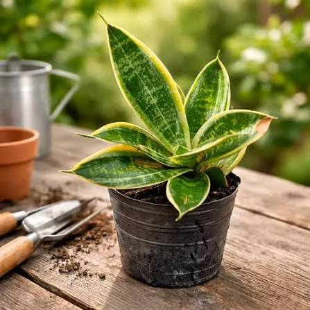
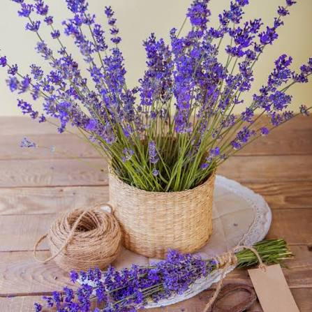
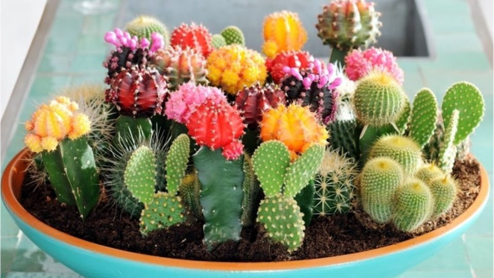
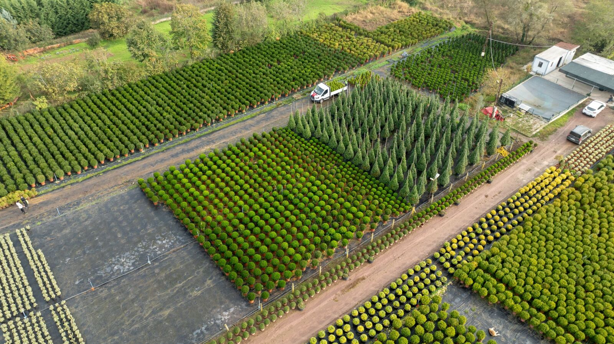

Interior
Para ambientes con luz indirecta y poco viento.
Ver plantasMás de 200 especies de interior y exterior, con la ficha de cuidados de cada una. Elegí por luz, por riego o por lo que te guste mirar.
Tres familias que cubren casi cualquier rincón: el living con poca luz, el balcón que se lleva todo el sol y el escritorio.

Para ambientes con luz indirecta y poco viento.
Ver plantas
Resisten sol pleno, lluvia y cambios de temperatura.
Ver plantas
Riego cada quince días. Ideales para empezar.
Ver plantas
Cultivamos en Escobar desde 1998. Cada planta que sale de acá pasó por nuestras manos y tiene una ficha con lo que necesita para no morirse en dos semanas.